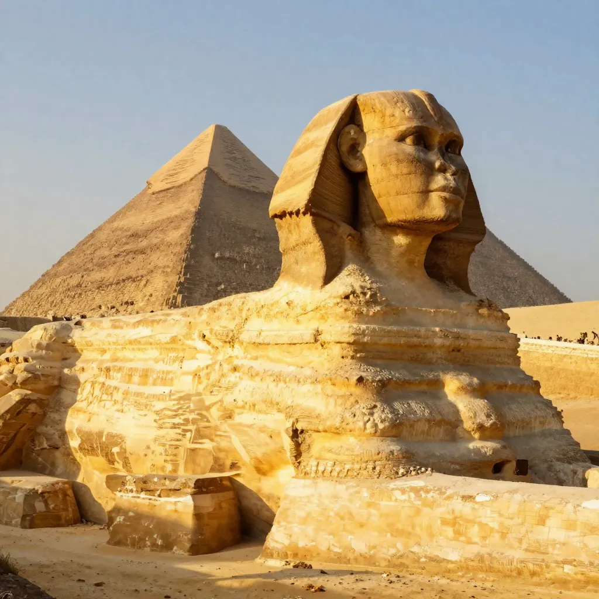

The Great Sphinx of Giza: Secrets of the World's Oldest and Largest Monument

It is dawn on the Giza Plateau in Egypt. The first light of the sun touches the face of the Great Sphinx. For a few minutes, the old limestone glows gold. It looks east, as it has done for about 4,500 years.
The Sphinx is huge. It is 73 meters (240 feet) long and 20 meters (66 feet) high. It was carved from one ridge of limestone bedrock. Bedrock is the solid rock under the ground. A pharaoh, a king of ancient Egypt, gave the order. We do not know for certain which one.
The job was enormous. Workers had to dig a trench in the shape of a horseshoe around the rock. Only then was the body free from the stone around it. Since then the Sphinx has sat beside the Great Pyramids. It has lived through sandstorms, invasions, and time.
Yet this giant will not answer the simplest questions about itself. Who carved it? When? Why? And is anything hidden under those massive paws?
The usual answer is Pharaoh Khafre. He ruled from about 2558 to 2532 BCE, and he built the second pyramid at Giza. But a small group of researchers does not agree. For three decades they have argued that the rock tells a very different story.
They say the Sphinx could be thousands of years older than the pyramids. This is one of the fiercest arguments in archaeology, the study of the human past.
The Great Sphinx is more than a statue. It is a riddle carved in stone. Travelers, scholars, and mystics have wondered about it for thousands of years.
The ancient Greeks gave it the name Sphinx. The name comes from their word for “strangler.” The Egyptians called it shesep-ankh, which means “living image.” The Romans admired it. Arabs in the Middle Ages honored it. And people say that Napoleon’s soldiers used it for target practice. But did they?
Every age brings its own fears and wonders to that strange face, and goes away without an answer. The Sphinx keeps its secrets.
The Great Sphinx sits in a shallow pit on the eastern edge of the Giza Plateau. It faces exactly east, toward the rising sun. It shows a lion lying down, with a human head. The head wears the nemes, the striped royal headcloth of an Egyptian pharaoh.
The body was carved from the natural limestone of the Giza ridge. The long front paws were built up with hundreds of cut stone blocks. At first, the whole surface was covered in plaster and painted in bright reds, blues, and yellows. Traces of paint can still be seen near one ear.
The Sphinx is unusual in one important way. The pyramids were put together from separate blocks. The Sphinx was not. It was carved where it stood, from a natural hill of rock.
Where the limestone had flaws, they patched it with stones and mortar. The head was carved from a harder layer of rock. It has lasted better than the body, which is softer limestone.
The Sphinx is the largest monolith statue in the world. A monolith is something made from one single piece of stone. It is about as wide as a football field and as tall as a six-story building.
To free the body from the bedrock, workers removed a great deal of stone. The amount is estimated at hundreds of thousands of cubic feet. A royal beard once hung from the chin. Pieces of it are now in the British Museum and the Cairo Museum.
Most Egyptologists say Pharaoh Khafre built the Sphinx. Egyptologists are experts who study ancient Egypt. Khafre is also known as Chephren. He ruled in the Fourth Dynasty of the Old Kingdom, from about 2558 to 2532 BCE. He built the second-largest pyramid at Giza.
The evidence for Khafre is indirect, but there is a lot of it. The Sphinx sits on a causeway, a raised road, that leads from Khafre’s pyramid complex. It is directly in front of his Valley Temple.
There is also the Sphinx Temple, which stands directly in front of the statue. It is built in the same style as Khafre’s other buildings. Its blocks were cut from the pit around the Sphinx itself.
A giant statue of Khafre was found nearby in the Valley Temple. It lets us compare the two faces. But the face of the Sphinx is very worn. So whether they match is a matter of opinion.
The idea has one serious weakness. No writing from Khafre’s own time names him as the builder. There is no papyrus. There is no stele, which is a carved stone slab. There is no foundation deposit, a set of objects buried under a new building. Nothing from his reign mentions the Sphinx at all.
The earliest known writing that links the Sphinx with Khafre is the Inventory Stele. It was found near the Sphinx in the 19th century. But the stele was made much later, in the 26th Dynasty, around 600 BCE. Many scholars do not trust it.
So the case rests mostly on location and building style. The Sphinx “belongs” to Khafre’s pyramid complex because of where it sits. Khafre himself never claimed it.
One of the best-known stories about the Sphinx is about its missing nose. People say that the soldiers of Napoleon Bonaparte shot it off with cannons. This was supposed to have happened during the French campaign in Egypt in 1798. The story is almost certainly false.
European travelers made careful drawings of the Sphinx long before that. One was a Danish naval captain, Frederic Louis Norden. He drew it in 1738, decades before Napoleon was born. His drawing already shows the Sphinx without its nose.
The account that historians quote most often comes from al-Maqrizi, an Arab historian of the 15th century. He blamed a Sufi Muslim named Muhammad Sa’im al-Dahr. According to al-Maqrizi, it happened in 1378 CE.
Local farmers were making offerings to the Sphinx. They hoped it would give them better harvests. Al-Dahr was furious, because he believed this was the worship of a false god. He climbed onto the Sphinx and cut off its nose with chisels.
It is said that al-Dahr was put to death for the damage. The tool marks around the nose fit this story. They look like the work of chisels, not of wind or sand.
In 1990, a geologist named Robert M. Schoch traveled to Egypt. A geologist is a scientist who studies rocks. Schoch worked at Boston University. An independent researcher, John Anthony West, had invited him.
Schoch wanted to look at the Sphinx only as a geologist. He would read the worn marks in the limestone like the layers of a cliff. What he found changed the argument about the Sphinx for good.
He studied the body of the Sphinx. He also studied the walls of the Sphinx Enclosure, the horseshoe-shaped pit from which the statue was carved. He found deep cracks and wavy surfaces. He decided that only long periods of rain and running water could have made them.
This was not like the wind damage on other Old Kingdom buildings at Giza. Wind makes sharp, angular cuts and layered patterns. The walls of the pit had the rounded, rolling shapes that water leaves behind.
The problem was clear at once. The Giza region has been extremely dry for about 5,000 years. If rain wore down the Sphinx, the Sphinx must be older than the drying of the Sahara.
That would put its carving back to at least 5000 BCE. It might even go back to the end of the last Ice Age, around 10,000 BCE. That is thousands of years before the usual date of Khafre’s reign. It is also thousands of years before writing, giant buildings, or the Egyptian state.
Egyptologists and other geologists pushed back hard. They pointed out that the Sphinx pit fits neatly into the plan of Khafre’s pyramid complex. The causeway, the Valley Temple, and the Sphinx Temple all form one design.
Rock studies added more. Limestone from the Sphinx pit was used to build the Sphinx Temple and parts of Khafre’s Valley Temple. That suggests they were all built at the same time.
The geologist James Harrell offered another answer. He argued that Nile floods and occasional heavy rains could explain the marks. Those rains went on into the time of the pharaohs. No great flood from before history was needed.
Other researchers blamed haloclasty. That is damage from salt. Salt crystals grow inside the tiny holes in the limestone and break it. This leaves rounded shapes that look like water damage.
The Wikipedia article on the Sphinx water erosion hypothesis calls it a “fringe theory.” It notes that most archaeologists and Egyptologists reject the idea of an earlier date.
Are there hidden rooms under the Great Sphinx? People have guessed about this for centuries. In the 1990s, a team went to find out. It was led by the geophysicist Thomas Dobecki and paid for by the Edgar Cayce Foundation.
The team ran seismic surveys around the Sphinx. A seismic survey sends waves into the ground to show what lies below. They used ground-penetrating radar and sound tests.
They reported a hollow space in the shape of a rectangle. It was about 25 feet under the paws of the Sphinx. It measured about 12 feet wide and 30 feet long, and it looked like a room made by people. They also found what looked like a tunnel running south from it.
At first the Egyptian government gave permission for more study. Later it stopped the project. It said it was worried about the strength of the Sphinx.
There is also the Schutt Shaft, a hole that goes straight down into the back of the Sphinx, behind the head. It was cleared and explored. It held only a small space filled with rubble.
So far, no important hidden room under the Sphinx has been clearly proved. But the strange seismic readings have never been explained.
Between the long front paws of the Sphinx stands a slab of granite. It is called the Dream Stele, or the Sphinx Stele. Pharaoh Thutmose IV set it up around 1400 BCE. By the usual dating, that was more than a thousand years after the Sphinx was built.
The stele tells the story of the young prince Thutmose. He was not the heir to the throne. One day he was out hunting on the Giza Plateau. He grew very tired and lay down to rest in the shadow of the Sphinx. At that time, sand buried the statue up to its neck.
As he slept, the Sphinx came to him in a dream and spoke. “I will give you the throne of Upper and Lower Egypt, if you will clear the sand from my body and restore me.”
The prince woke, cleared the sand, and repaired the Sphinx. And he became pharaoh, just as the dream had promised.
The Dream Stele tells us a lot about the place of the Sphinx in Egyptian religion. It is just as interesting for what it leaves out. By the time of Thutmose IV, the Sphinx was already very old. It was buried to the neck, and its first purpose had been forgotten.
The writing on the stele does not name the builder of the Sphinx. That silence is telling. Instead, the stele shows the statue as a form of the sun god Horemakhet, “Horus in the Horizon.” This ties the Sphinx to the Egyptian worship of the sun, which lasted for thousands of years.
The Great Sphinx has stared east across the desert longer than any other giant sculpture in human history. It has been buried to its neck in sand and dug out again. Angry believers cut off its nose, and its beard broke away.
It has been worshipped as a god and ignored as an oddity. It is said that people who hated such images even used explosives on it. By the usual story, it has stood through 4,500 years of wind, sand, and human foolishness. Or perhaps it has stood far longer, as the marks on the walls of its pit may show.
The argument between the Egyptologists and the geologists who disagree will not end soon. But nobody argues about the power of the Sphinx as a symbol. It stands for the mystery of the ancient world, for the limits of what we know, and for the long time between us and its carvers.
Every theory about the Sphinx tells us as much about the thinker as about the statue. Most scholars see a work of the Old Kingdom. It is impressive, but it fits inside the known history of Egypt. Other researchers see proof of a lost chapter in the human story.
The Sphinx itself stays silent. It has kept that silence for thousands of years, and it will probably keep it for thousands more. That silence is the true mystery of the Great Sphinx of Giza. Who made it, and when?
References & Further Reading
Wikipedia: Khafre — The pharaoh conventionally credited with building the Great Sphinx
Robert Schoch: The Great Sphinx — The geologist’s own account of his research and findings at Giza
📚 Recommended Reading: The Message of the Sphinx by Graham Hancock (on Amazon) — As an Amazon Associate, we earn from qualifying purchases.
Editorial note: Archaeological understanding of the Sphinx continues to evolve as new imaging and inscription studies improve. See our Editorial Policy.